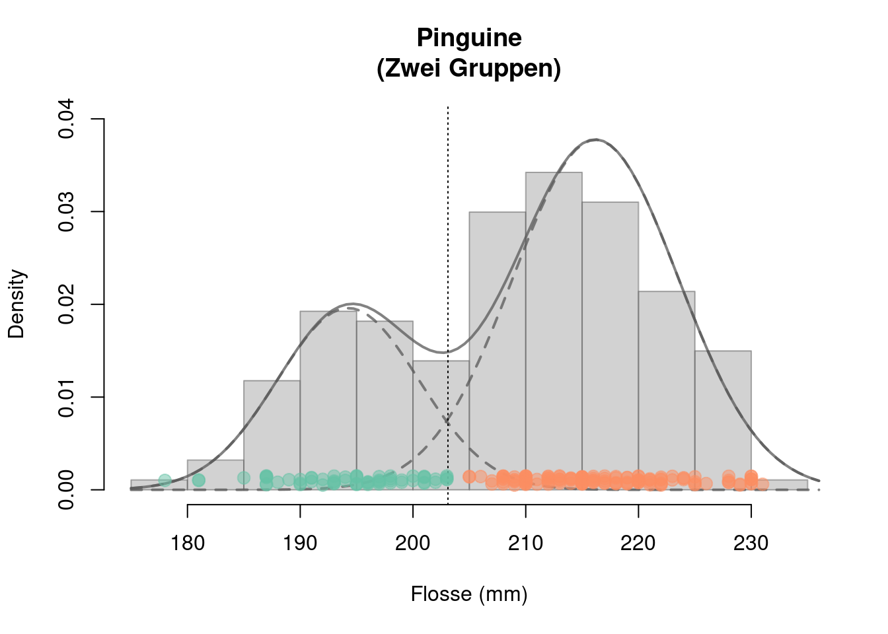

1.2 Der EM Algorithmus zur ML-Schätzung Gaußscher Mischverteilungen
1.2.1 Gaußsche Mischmodelle (GMM)
Eine Zufallsvariable \(X\), die einer Gauschen Mischverteilung folgt, bezeichnen wir als \[ X\sim\mathcal{N}_{\mathcal{mix}}(G,\boldsymbol{\pi},\boldsymbol{\mu},\boldsymbol{\sigma}) \]
Die dazugehörige Dichtefunktion einer Gaußschen Mischverteilung ist folgendermaßen definiert: \[\begin{equation} f_G(x|\boldsymbol{\pi},\boldsymbol{\mu},\boldsymbol{\sigma})=\sum_{g=1}^G\pi_gf(x|\mu_g\sigma_g) \tag{1.1} \end{equation}\]
- Gewichte: \(\boldsymbol{\pi}=(\pi_1,\dots,\pi_G)\) mit \(\pi_g>0\) und \(\sum_{g=1}^G\pi_g=1\)
- Mittelwerte: \(\boldsymbol{\mu}=(\mu_1,\dots,\mu_G)\) mit \(\mu_g\in\mathbb{R}\)
- Standardabweichungen: \(\boldsymbol{\sigma}=(\sigma_1,\dots,\sigma_G)\) mit \(\sigma_g>0\)
- Normalverteilung der Gruppe \(g=1,\dots,G\): \[ f(x|\mu_g\sigma_g)=\frac{1}{\sqrt{2\pi}\sigma_g}\exp\left(-\frac{1}{2}\left(\frac{x-\mu_g}{\sigma_g}\right)^2\right) \]
- Unbekannte Parameter: \(\boldsymbol{\pi}\), \(\boldsymbol{\mu}\) und \(\boldsymbol{\sigma}\)
1.2.2 Maximum Likelihood (ML) Schätzung
Man kann versuchen die unbekannten Parameter \(\boldsymbol{\pi}=(\pi_1,\dots,\pi_G)\), \(\boldsymbol{\mu}=(\mu_1,\dots,\mu_G)\) und \(\boldsymbol{\sigma}=(\sigma_1,\dots,\sigma_G)\) eines Gaußschen Mischmodells klassisch mit Hilfe der Maximum Likelihood Methode zu schätzen.
Ich sag’s gleich: Der Versuch wird scheitern.
Wiederholung der Grundidee der ML-Schätzung:
- Annahme: Die Daten \(\mathbf{x}=(x_1,\dots,x_n)\) sind eine Realisation einer einfachen (also i.i.d.) Zufallsstichprobe \((X_1,\dots,X_n)\) mit \[ X_i\sim\mathcal{N}_{\mathcal{mix}}(G,\boldsymbol{\pi},\boldsymbol{\mu},\boldsymbol{\sigma}) \] für alle \(i=1,\dots,n\).
Die Daten \(\mathbf{x}=(x_1,\dots,x_n)\) „kennen“ also die unbekannten Parameter \(\boldsymbol{\pi},\) \(\boldsymbol{\mu}\) und \(\boldsymbol{\sigma}\) und wir müssen ihnen diese Informationen „nur noch“ entlocken.
Schätz-Idee: Wähle \(\boldsymbol{\pi}\), \(\boldsymbol{\mu}\) und \(\boldsymbol{\sigma}\) so, dass \(f_G(\cdot|\boldsymbol{\pi},\boldsymbol{\mu},\boldsymbol{\sigma})\) „optimal“ zu den beobachteten Daten \(\mathbf{x}\) passt.
Umsetzung der Schätz-Idee: Maximiere (bzgl. \(\boldsymbol{\pi}\), \(\boldsymbol{\mu}\) und \(\boldsymbol{\sigma}\)) die Likelihood Funktion \[\mathcal{L}(\boldsymbol{\pi},\boldsymbol{\mu},\boldsymbol{\sigma}|\mathbf{x})=\prod_{i=1}^nf_G(x_i|\boldsymbol{\pi},\boldsymbol{\mu},\boldsymbol{\sigma})\] Bzw. maximiere die Log-Likelihood Funktion (einfachere Maximierung) \[\begin{align*} \ln\left(\mathcal{L}(\boldsymbol{\pi},\boldsymbol{\mu},\boldsymbol{\sigma}|\mathbf{x})\right)= \ell(\boldsymbol{\pi},\boldsymbol{\mu},\boldsymbol{\sigma}|\mathbf{x}) =&\sum_{i=1}^n\ln\left(f_G(x_i|\boldsymbol{\pi},\boldsymbol{\mu},\boldsymbol{\sigma})\right)\\ =&\sum_{i=1}^n\ln\left(\sum_{g=1}^G\pi_g\phi_{\mu_g\sigma_g}(x_i)\right) \end{align*}\] Beachte: Die Maximierung muss die Parameterrestriktionen in (1.1) berücksichtigen (\(\sigma_g>0\) und \(\pi_g>0\) für alle \(g=1,\dots,G\) und \(\sum_{g=1}^G\pi_g=1\)).
Die maximierenden Parameterwerte \(\hat{\boldsymbol{\pi}}\), \(\hat{\boldsymbol{\mu}}\) und \(\hat{\boldsymbol{\sigma}}\) sind die ML-Schätzer. Das kann man so ausdrücken: \[ (\hat{\boldsymbol{\pi}},\hat{\boldsymbol{\mu}},\hat{\boldsymbol{\sigma}})=\arg\min_{\boldsymbol{\pi},\boldsymbol{\mu},\boldsymbol{\sigma}}\ell(\boldsymbol{\pi},\boldsymbol{\mu},\boldsymbol{\sigma}|\mathbf{x}) \]
😒 Numerische Lösungen: Versucht man obiges Maximierungsproblem numerisch mit Hilfe des Computers zu lösen, wird man schnell merken, dass die Ergebnisse höchst instabil, unplausibel und wenig vertrauenswürdig sind.
Für echte GMMs (\(G>1\)) treten während einer numerischen Maximierung sehr leicht Probleme mit Singularitäten auf. Dies geschieht immer dann, wenn eine der Normalverteilungskomponenten versucht den ganzen Datensatz \(\mathbf{x}\) zu beschreiben und die andere(n) Normalverteilungskomponente(n) versuchen lediglich einzelne Datenpunkte zu beschreiben. Eine Gaußsche Dichtefunktion \(f_g\), die sich um einen einzigen Datenpunkt \(x_i\) konzentriert (d.h. \(\mu_g=x_i\) und \(\sigma_g\to 0\)) wird dabei sehr große Werte annehmen (d.h. \(f_g(x_i)\to\infty\)) und so die Log-Likelihood auf unerwünschte maximieren. Solche trivialen Maximierungslösungen resultieren i.d.R. in unplausiblen Schätzergebnissen.
😒 Analytische Lösung: Es ist zwar etwas mühsam, aber man kann versuchen die Log-Likelihood analytisch zu maximieren. Tut man dies sich das an, kommt man zu folgenden Ausdrücken: \[\begin{align*} \hat\pi_g&=\frac{1}{n}\sum_{i=1}^np_{ig}\\ \hat\mu_g&=\sum_{i=1}^n\frac{p_{ig}}{\left(\sum_{j=1}^np_{jg}\right)}x_i\\ \hat\sigma_g&=\sqrt{\sum_{i=1}^n\frac{p_{ig}}{\left(\sum_{j=1}^np_{jg}\right)}\left(x_i-\hat\mu_g\right)^2} \end{align*}\] für \(g=1,\dots,G\).
Die Herleitung der Ausdrücke für \(\mu_g\), \(\sigma_g\) und \(\pi_g\), \(g=1,\dots,G\), ist wirklich etwas lästig (mehrfache Anwendungen der Kettenregel, Produktregel, etc., sowie Anwendung des Lagrange-Multiplikator Verfahrens zur Optimierung unter Nebenbedingungen) aber machbar. In einer der Übungsaufgaben dürfen Sie den Ausdruck für \(\hat\mu_g\) herleiten.
🙈 Aber: Diese Ausdrücke für \(\hat\pi_g\), \(\hat\mu_g\) und \(\hat\sigma_g\) hängen von den unbekannten Parametern \(\boldsymbol{\pi}=(\pi_1,\dots,\pi_G)\), \(\boldsymbol{\mu}=(\mu_1,\dots,\mu_G)\) und \(\boldsymbol{\sigma}=(\sigma_1,\dots,\sigma_G)\), denn: \[ p_{ig}=\frac{\pi_g\phi_{\mu_g\sigma_g}(x_i)}{f_G(x_i|\boldsymbol{\pi},\boldsymbol{\mu},\boldsymbol{\sigma})} \] für \(i=1,\dots,n\) und \(g=1,\dots,G\). Erlauben also keine direkte Schätzung der unbekannten Parameter \(\boldsymbol{\pi}\), \(\boldsymbol{\mu}\) und \(\boldsymbol{\sigma}\)
🥳 Lösung: Der EM Algorithmus
1.2.3 Der EM Algorithmus für GMMs
Die Ausdrücke für \(\hat\pi_g\), \(\hat\mu_g\) und \(\hat\sigma_g\) legen jedoch ein einfaches iteratives ML-Schätzverfahren nahe: Nämlich einer alternierenden Schätzung von \(p_{ig}\) und \(\hat\pi_g\), \(\hat\mu_g\) und \(\hat\sigma_g\).
Der Der EM Algorithmus:
Setze Startwerte \(\boldsymbol{\pi}^{(0)}\), \(\boldsymbol{\mu}^{(0)}\) und \(\boldsymbol{\sigma}^{(0)}\)
Für \(r=1,2,\dots\)
(Expectation) Berechne: \[p_{ig}^{(r)}=\frac{\pi_g^{(r-1)}\phi_{\mu^{(r-1)}_g\sigma_g^{(r-1)}}(x_i)}{f_G(x_i|\boldsymbol{\pi}^{(r-1)},\boldsymbol{\mu}^{(r-1)},\boldsymbol{\sigma}^{(r-1)})}\]
(Maximization) Berechne:
\(\hat\pi_g^{(r)}=\frac{1}{n}\sum_{i=1}^np_{ig}^{(r)},\quad\quad\hat\mu_g^{(r)}=\sum_{i=1}^n\frac{p_{ig}^{(r)}}{\left(\sum_{j=1}^np_{jg}^{(r)}\right)}x_i\)
\(\hat\sigma_g^{(r)}=\sqrt{\sum_{i=1}^n\frac{p_{ig}^{(r)}}{\left(\sum_{j=1}^np_{jg}^{(r)}\right)}\left(x_i-\hat\mu_g^{(r)}\right)^2}\)
Prüfe Konvergenz
Der obige pseudo-Code wird im Folgenden Code-Chunck umgesetzt:
library("MASS")
library("mclust")
## Daten:
x <- cbind(Penguine_Flosse) # Daten [n x d]-Dimensional.
d <- ncol(x) # Dimension (d=1: univariat)
n <- nrow(x) # Stichprobenumfang
G <- 2 # Anzahl Gruppen
## Weitere Deklarationen:
llk <- matrix(NA, n, G)
p <- matrix(NA, n, G)
loglikOld <- 1e07
tol <- 1e-05
it <- 0
check <- TRUE
## EM Algorithmus
## 1. Startwerte für pi, mu und sigma:
pi <- rep(1/G, G) # Naive pi
sigma <- array(diag(d), c(d,d,G)) # Varianz = 1
mu <- t(MASS::mvrnorm(G, colMeans(x), sigma[,,1]*4) )
while(check){
## 2.a Expectation-Schritt
for(g in 1:G){
p[,g] <- pi[g] * mclust:::dmvnorm(x, mu[,g], sigma[,,g])
}
p <- sweep(p, 1, STATS = rowSums(p), FUN = "/")
## 2.b Maximization-Schritt
par <- mclust::covw(x, p, normalize = FALSE)
mu <- par$mean
sigma <- par$S
pi <- colMeans(p)
## 3. Prüfung der Konvergenz
for(g in 1:G) {
llk[,g] <- pi[g] * mclust:::dmvnorm(x, mu[,g], sigma[,,g])
}
loglik <- sum(log(rowSums(llk))) # aktueller Log-Likelihood Wert
##
diff <- abs(loglik - loglikOld)/abs(loglik)
loglikOld <- loglik
it <- it + 1
## Anderung der Log-Likelihood noch groß genug?
check <- diff > tol
}
## Schätz-Resultate:
results <- matrix(c(pi, mu, sqrt(sigma)),
nrow = 3, ncol = 2, byrow = TRUE,
dimnames = list(
c("Gewichte", "Mittelwerte", "Standardabweichungen"),
c("Gruppe 1", "Gruppe 2")))
##
results %>% round(., 2)
#> Gruppe 1 Gruppe 2
#> Gewichte 0.31 0.69
#> Mittelwerte 194.27 216.20
#> Standardabweichungen 6.27 7.32Das Schätzergebnis erlaubt es uns, Abbildung 1.1 zu replizieren:
## Auswerten der Gaußsche Mischungs-Dichtefunktion
np <- 100 # Anzahl der Auswertungspunkte
xxd <- seq(min(Penguine_Flosse)-3, max(Penguine_Flosse)+5, length.out = np)
## Mischungs-Dichte
yyd <- dnorm(xxd, mu[1,1], sqrt(sigma)[,,1])*pi[1] +
dnorm(xxd, mu[1,2], sqrt(sigma)[,,2])*pi[2]
## Einzel-Dichten
yyd1 <- dnorm(xxd, mu[1,1], sqrt(sigma)[,,1])*pi[1]
yyd2 <- dnorm(xxd, mu[1,2], sqrt(sigma)[,,2])*pi[2]
## Plot
hist(x = Penguine_Flosse, xlab="Flosse (mm)", main="Pinguine\n(Zwei Gruppen)",
col=gray(.65,.5), border=gray(.35,.5), freq = FALSE, ylim=c(0, 0.04))
lines(x = xxd, y=yyd, lwd=2, col=gray(.35,.75))
lines(x = xxd, y=yyd1, lwd=2, col=gray(.35,.75), lty=2)
lines(x = xxd, y=yyd2, lwd=2, col=gray(.35,.75), lty=2)
abline(v=203.1, lty=3)
stripchart(Penguine_Flosse[class==1], method = "jitter", jitter = .0005, at = .001,
pch = 21, col=alpha(col_v[1],.5), bg=alpha(col_v[1],.5), cex=1.3, add = TRUE)
stripchart(Penguine_Flosse[class==2], method = "jitter", jitter = .0005, at = .001,
pch = 21, col=alpha(col_v[2],.5), bg=alpha(col_v[2],.5), cex=1.3, add = TRUE)